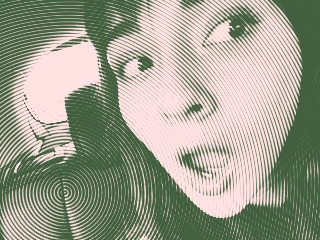
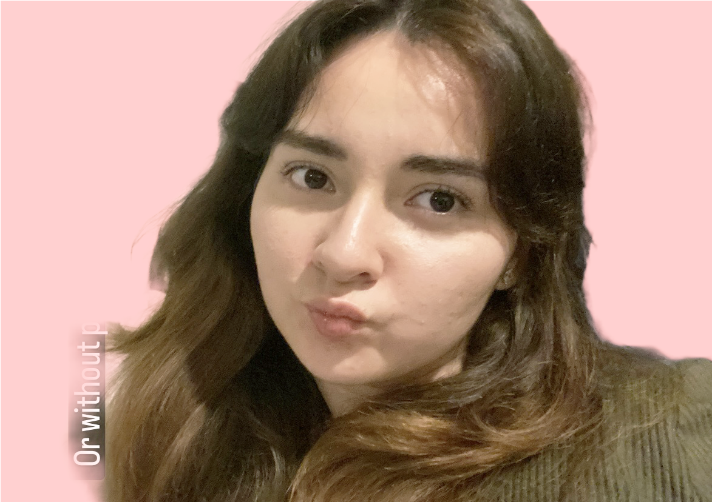
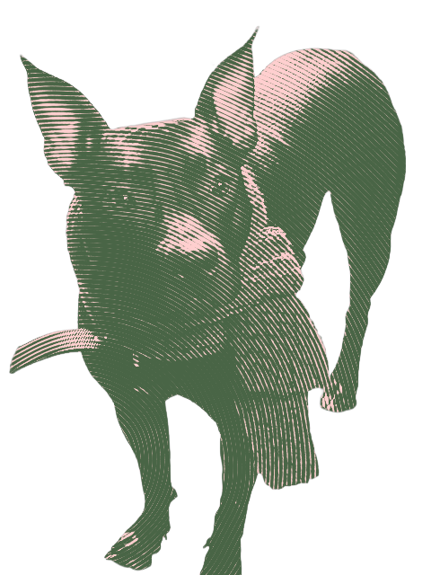

Idiomas
- Español - Nativo
- Inglés - Fluido
- Francés - Principiante

Soy una estudiante de Universidad CETYS en el campus de Ensenada,
Baja California, México y actualmente estoy ejerciendo la carrera de ingeniería en
diseño gráfico digital. Desde pequeña siempre me ha fascinado el arte y el dibujo digital,
desde los 9 años he participado en exposiciones de arte y escultura en la Facultad de Arte en la
Universidad de UABC. A pesar que, no he ejercido la pintura o escultura en los últimos años,
mi trayectoría artística me ha llevado a diferentesáreas como el diseño, el modelado 3D,
la música y la apreciación a la danza contemporánea.

